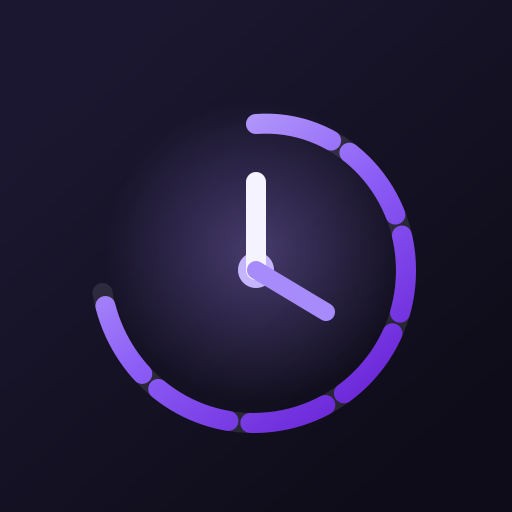

Why it works
One compact layer for focus, planning, and atmosphere.
PocketFlow keeps the essentials visible without turning your desktop into a dashboard. It sits in the menu bar, remembers your tasks, and stays lightweight enough to use all day.

PocketFlowPocketFlow for macOS
Timer, tasks, ambient music, and menu bar access in one lightweight window. Built to feel immediate, calm, and always within reach.
Why it works
PocketFlow keeps the essentials visible without turning your desktop into a dashboard. It sits in the menu bar, remembers your tasks, and stays lightweight enough to use all day.
Timer
Set any minute length you want, start fast, and keep the timer orbit readable at a glance.
Tasks
Your task list persists between launches, so reopening the app feels instant and continuous.
Ambient
Play the built-in ambient stream, control volume fast, and let the timer auto-start or stop it.
Designed for desktop calm
Download
The button below links to the local `.dmg` generated in this repo. When you publish it, replace the same link with your hosted release URL.
Get PocketFlow.dmg